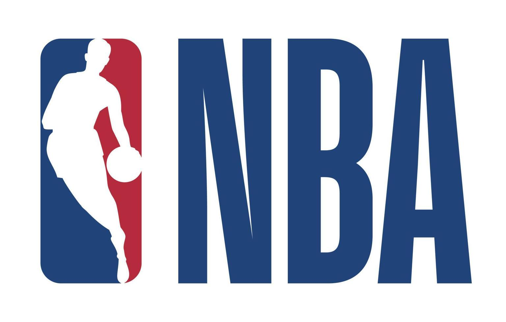

National Basketball Association

Die NBA ist eine geschlossene Liga ohne Auf-
oder Absteiger. Neue Spieler werden über eine jährliche Entry Draft auf
die Teams verteilt, wobei eine vorhergehende Auslosung (die Draft Lottery)
mit einer Losanzahl basierend auf dem Abschneiden des Vorjahres über die
Reihenfolge der Teams in der NBA Draft entscheidet. Seit 2001 ist der NBA
eine kleinere Liga mit inzwischen 31 sogenannten Farmteams angegliedert,
die seit der Saison 2017/18 NBA G-League heißt.[2]
Geschichte
Die 1940'er Jahre
Als offizielles Gründungsdatum der NBA gilt der 6. Juni 1946, der Gründungstag der Vorgängerliga Basketball Association of America (BAA) in New York City. Treibende Kraft für die Gründung des Verbandes waren die Besitzer und Betreiber von Sportarenen, organisiert als Arena Managers Association of America (AMAA), die ihr Geld hauptsächlich mit Eishockey, vor allem in der American Hockey League (AHL) sowie der National Hockey League und auf diesem Weg eine Auslastung für ihre Hallen und eine zusätzliche Geldeinnahme suchten. Während sieben Mitglieder die AHL repräsentierten, gehörten fünf (Chicago, New York, Boston, Detroit und Toronto) der NHL an. Lediglich in der Uline Arena von Washington D.C. wurde kein Eishockey gespielt. Erster Präsident der Liga und BAA-Vorsitzender wurde daher auch Maurice Podoloff, der damalige Präsident der AHL, nach dem seit der Saison 2022/23 die Trophäe für das punktbeste Team der Regular Season benannt ist.[3] Die BAA stand jedoch zu Beginn noch unter einem schlechten Stern. Sie hatte mit massiven finanziellen Problemen zu kämpfen und es mangelte ihr an guten Spielern. Erschwerend kam hinzu, dass sich bereits nach dem ersten Jahr vier Mannschaften aus der Liga zurückzogen. Gegenüber Publikum und National Basketball League (NBL) stellte sich die BAA aber als machtvolle Großstadtliga dar, um von ihrem sportlich unterlegenen Produkt abzulenken und nach den Baltimore Bullets im Jahre 1947, dem Meister der American Basketball League (ABL), 1948 vier ihrer Teams in die neue Liga zu locken.[4] Deshalb wurde am 3. August 1949 die NBL unter dem Vorwand einer Fusion übernommen und die Liga schließlich in National Basketball Association umbenannt.
Bis heute werden daher die BAA-Champions von 1947 bis 1949 auch als NBA-Champions geführt. Von den 1949 übernommenen NBL-Teams verblieben nach der Saison 1949/50 lediglich die Tri-Cities Blackhawks und die Syracuse Nationals in der Liga. In der Anfangszeit überlebte die an Zuschauermangel darbende Liga lediglich durch regelmäßige Doubleheader mit den Harlem Globetrotters. Aus diesem Grund waren anfänglich auch afroamerikanische Spieler ausgeschlossen, um deren Besitzer Abe Saperstein nicht zu verärgern.
| Saison | BAA-Meister |
|---|---|
| 1946/47 | Philadelphia Warriors |
| 1948/49 | Baltimore Bullets |
| 1948/49 | Minneapolis Lakers |